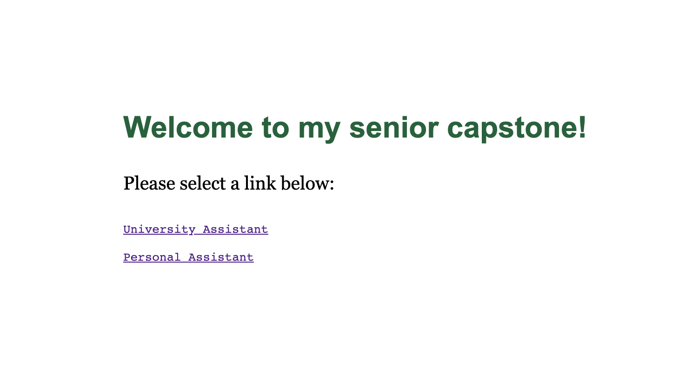
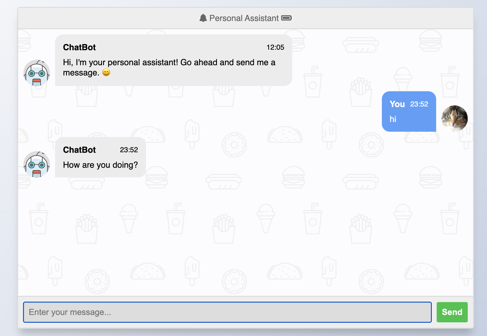
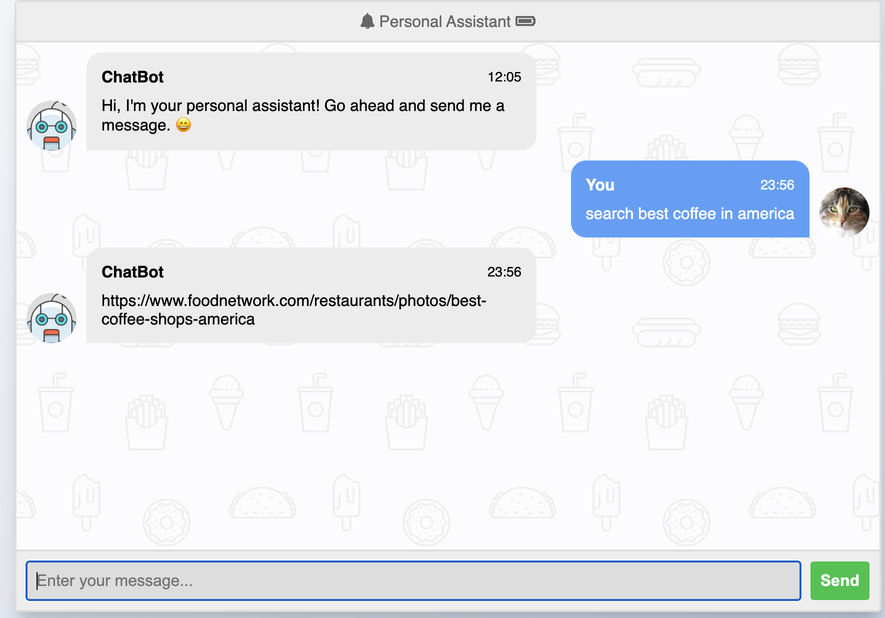
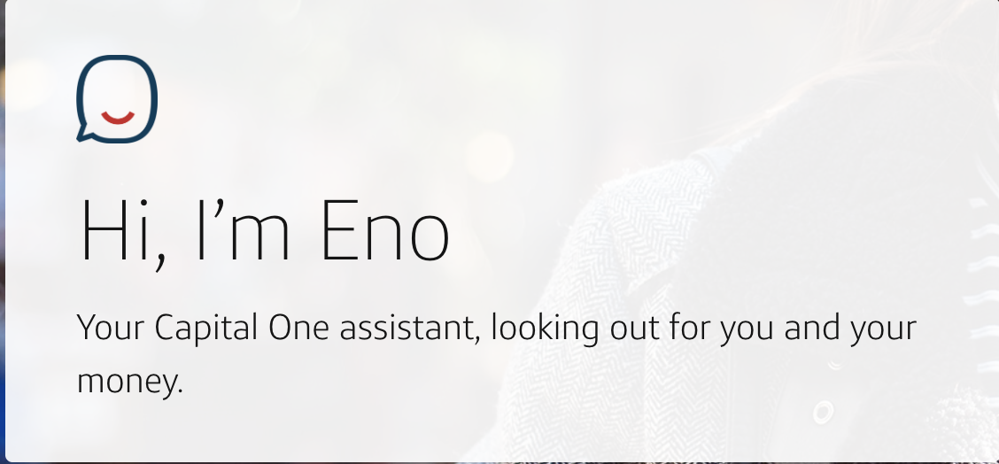

Abstract¶
A ChatBot is an artificial intelligence program often used to simulate human conversation. As AI technology becomes more widespread, the need for ChatBots increases for both users and the companies employing said bots. They are often used to help customers due to their ability to be present online 24 hours a day 7 days a week. This also reduces the need for human employees in these situations. For personal ChatBots, the user prefers for the bot to seem more human than artificial.
How It Works¶
To understand how the ChatBot works, it is important to understand what the main programming language is for the back-end and actual bot. Back-end means the user will likely never see those strings of code and will, instead, use the interface created with their interaction in mind. Python is the language the actual back-end of the ChatBot is created in. It was created in 1991 with code readability in mind as a lot of higher-level programming languages can be difficult to parse. Not only was it created to enable user readability, but it also has a very diverse library of modules both Python-created and independently user-created. These modules can do everything from scraping the web to plotting graphs to formatting your returned code. The main modules in the ChatBot are Chatterbot and Flask.
Flask is a software framework created by Armin Ronacher of Pocoo that supports web application building using Python. While the module lacks form validation and certain common web development libraries, Flask makes up for it by seamlessly supporting extensions that add a variety of features. Some of the more common extensions are form validation and open authentication. Due to its flexibility and openness, it will offer users suggestions for how to create a project layout but will not require a certain method for doing so. As the community continues to add additional modules and extensions for Flask, Flask users have a far easier time developing entire pages and applications on the web.
Chatterbot is a Python library by Gunther Cox that allows automated responses for certain user queries. Using this quality, a developer can make artificial intelligence ChatBots with machine learning. This learning would, after a while, allow the user to have seamless conversations with said bot. Each time a response is given to something the bot says, the response is saved as well as the bot text that was originally given. Eventually, more and more responses means the bot would learn more and more ways to respond and appear far more human than an untrained bot. The Chatterbot library also allows users to save a set of automatic responses so the bot knows exactly how to respond to certain situations directly after installation.
To make automatic responses, the developer of the ChatBot would go to the file the bot was developed on and create a divided question and answer trainer section. They are referred to as trainers due to being the first resource the bot checks when it comes to knowing how to answer a user input or query. They require no machine-learning as they are hard-coded in, so the bot will always respond the exact same way when it sees that exact string. This is beneficial when it comes to business or university based bots as the creator would not want the bot to respond to two people asking a similar question two separate ways.
Here is an example of a trainer:
greeting = [ "Hello", "Hi there!", "How are you doing?", "I'm doing great.", "That is good to hear", "Thank you.", "You're welcome.", "Can I help you with anything?", "Could you get me a bag of chips?" ] trainer = ListTrainer(chatbot) trainer.train(greeting)
Inspiration¶
My biggest inspiration are the ChatBots I would use and play with as a pre-teen online such as CleverBot. They would be used by thousands if not tens of thousands of users online, so their capability for learning was far higher than what would be seen in a personal bot. As they aged and, essentially, matured, the bot would seem almost human in its speech patterns and questions. These sorts of ideas were the driving force behind my personal ChatBot as well as a useful quality that cellphones and PDAs have given to society. In a similar vein, online ChatBots, such as the ones used by Capital One and online stores, were the driving force behind the university ChatBot. It is almost always easier to have a set of pre-written prompts and common questions with answers set up for customers or users of a site than it is to have one individual monitoring the website and answering the same questions over and over. It can also alleviate potential annoyance with customers and site users if the website is larger as they may have to navigate down a few links to find what they are looking for. With a ChatBot, they can just ask it where to find a specific resource and get linked directly to it.

Next Steps/Future work¶
Since I had to learn how to use a majority of these Python modules and extensions, I did not have as much time as I could have to expand my ChatBot to the best of its abilities. As such, some of my ideas were unable to come to frutation to the extent I had in mind. My biggest next step would be to have a variety of users and testers talk to the bot extensively. This would allow its reservoir of saved text to greatly expand beyond what I, myself, could do as its singular user. A test group would also enable faster finding of potential bugs that would be encountered upon more regular usage. The immediate step after would be adding addtional features to the personal ChatBot such as finding the weather for the user both nearby and in most cities around the United States. It would also be beneficial for the university ChatBot if I could save more commonly asked questions by students such as where the room number of a specific professor is, where they go to get information about certain things like deposits, and how to find specific portions of the website that may be harder to access. My final step would be to make a cookbook ChatBot that would allow users to search and save recipes locally on their computer.
How To Use¶
To use the ChatBot, you will be in the Command-Line Terminal of your computer. The first step will be to install the requirements.txt file included in the package. This will ensure all of the necessary modules are installed prior to use*. Change directory into the place where you have downloaded or stored the files and type python3.8 app.py into the CMD. Once it is finished initalizing, type localhost:5000/ into any browser window. The ChatBot will then be available for use. To make changes, look for the appropriate file. If you’d like to make changes to a certain page: home_index.html changes the main page, index_uni.html changes the University ChatBot page, and index_per.html changes the Personal ChatBot page. Modify the shared-index.js file to change or add additional javascript functions present on the html documents and modify the style.css file to make changes to the overall style of the web pages. If you’d like to create a new ChatBot from the bottom up, modify the app.py file. To create a separate page for said ChatBot, you can add a new @app.route to this file and specify the link in the home_index.html file. This is also where the name of the new html file you make, if you so choose, is specified. The appropriate trainers can then be added to the chatbot.py file.